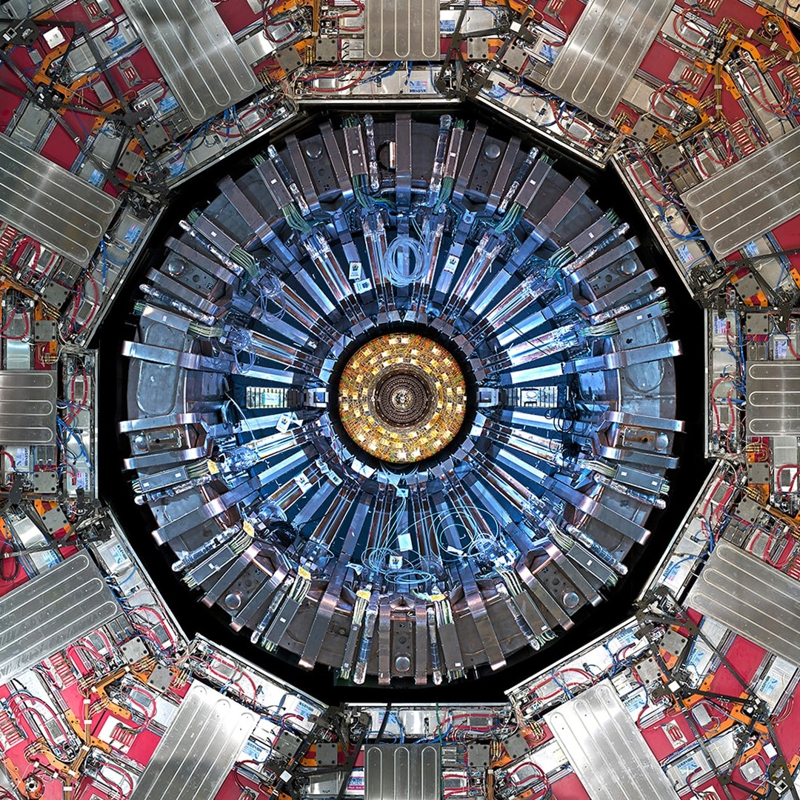

Research
- Keywords: quantum gravity, (flat space) holography, supergravity, formal string theory, black holes, asymptotic symmetries, symmetries and dualities, SUSY, integrability in string and field theory, twistor theory.
Publications
I don't have any peer-reviewed publications yet.
Current activities
Summer 2023: Integrability in quantum field theories (Padova, Italy)
Upon completion of my degree in Cambridge, I will join Prof. Alessandro Sfondrini to work on a new integrable 2D QFT over the summer, and look at its relations to string theory & the holographic conjecture in AdS3.
Spring 2023: Part III essay, BMS symmetries of Gravitational Scattering (Cambridge, UK)
In the 1960s, the study of the propagation of gravitational waves led Bondi, Metzner, Sachs and the likes to explicitly construct the group of symmetries of asymptotically flat spacetimes. Their findings paved the way for further investigations of the infrared structure of not only gravity, but also other gauge theories, and proved to be a mainstay of the celestial holography initiative. In this essay (Cambridge's equivalent of a master thesis), I follow their path and construct the asymptotic symmetry group of four-dimensional asymptotically flat spacetimes: the BMS group. I then study its implications in the context of gravitational scattering, showcasing the rich structure of gravity at large distances. This work was carried out under the guidance of Dr. Prahar Mitra.
Past activities
Summer 2022: Particle physics at CERN, CMS experiment (Meyrin, Switzerland)
I had the chance to join the High-Energy Physics Group of ETH Zürich (CMS collaboration, CERN) to carry out a project under the supervision of Dr. Simone Pigazzini. Together with Noah Roux, I studied the properties of the early prototype of the upgraded electromagnetic calorimeter (ECAL) of the Compact Muon Solenoid (CMS) experiment with a class IV laser. In parallel, we also wrote a Python package to automate the analysis of events. This work is to be incorporated in the future CMS experiment the in the upcoming years in the frame the High-Luminosity phase of the LHC.
{kind=link}
Fall 2021: LIFE space mission, Exoplanets & Habitability Group, ETHZ (Zurich, Switzerland)
The Large Interferometer for Exoplanets space mission aims at detecting and characterizing the atmospheres of hundreds of nearby extrasolar planets by means of a mid-infrared nulling interferometer concept. Under the supervision of Prof. Sascha Quanz and Felix Dannert, I implemented the phenomenon of imperfect nulling into the mission simulation software, and quantified its impact on the detection yield. Here is my project report.